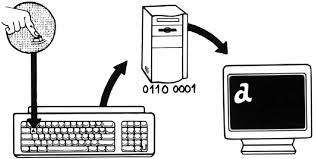

Invoer is ieder gegeven dat een computer gebruikt om te verwerken. Hierbij kan je denken aan als je op een toetsenbord typt. Elk teken wat je typt is een vorm van invoer. Andere voorbeelden van invoer zijn een microfoon of een touchscreen scherm.
Verwerking is het verwerken van de invoer, dit is de stap tussen invoer en uitvoer. Een computer verwerkt de invoer met een processor of CPU (Central Processing Unit). Deze gegevens slaat een computer op door middel van eenen en nullen (het binair stelsel). Gegevens kunnen worden opgeslagen met twee manieren, via interne opslag en externe opslag. Interne opslag is als iets tijdelijk wordt opgeslagen door de computer zelf (het RAM-geheugen). Externe opslag is het opslaan van gegevens op een aparte gegevensdrager zoals een CD, harde schijf of een USB-stick
Uitvoer is de term die gebruikt wordt voor de resultaten die zijn berekend door een computer. Als jij bijvoorbeeld code invoert om een website te maken zorgt de computer ervoor dat jouw code wordt omgevormd in een website. Dat is uitvoer, de computer voert iets uit. Als je de uitvoer van een computer wil raadplegen heb je weer een ander soort apparatuur nodig zoals een beeldscherm of een luidspreker.
